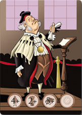

A DICE GAME SET IN BOLOGNA’S MIDDLE AGE
A fantastic game for 2-7 players, age 10 years and up.
Average playing time: 20 minutes.
OVERVIEW
Bologna, XIIIth century. The Empire, the Papacy, and the various Arts and Crafts Guilds are the movers and shakers who control the city. Bologna, with its ancient University and its population of 60.000, is the fifth most populous city in Europe, and the main textile center in Italy: Its wide trading network sustains the entire silk sector, connecting the city with the surrounding region, from the River Po to the Adriatic Sea. Bologna is a rich and cosmopolitan city where the food is fine and the wind is delicious, but it is also a city plagued by extreme social differences, political conspiracies, wars and plagues. In short, life is never boring! Each player controls people and resources in order to claim the most important and coveted place of power in the city: The Throne of Bologna. Claiming the Iron Throne would be a piece of cake in comparison. No weapons and no means are barred: will you be able to fulfill your goals and become the King of Bologna?
GAME GOALS
Each player takes a role in the fictional version of Bologna depicted in “The Throne of Bologna”: to select their role, each player draws a Role card, which they must keep secret from the other players until the end of the game. Turn after turn, players roll their dice to gain goods and resources, or to unleash devastating effects against their rivals (or even upon themselves!): The game’s strategy depends on the role you are playing and on your own experience!
GAME CONTENTS
7 Role Cards, 5 Dice, 1 Lombard Company Token, 3 Skip Turn Tokens, 24 Bologna Tokens, 24 Book tokens, 24 Tower Tokens, 24 People Tokens.
TOKENS
The game tokens show the Symbols described on the table below. When the game begins, all tokens are placed at the center of the table in a pool. During the game, players can gain tokens to include them in their final victory score, discard them or force their foes to discard them. A discarded token is returned to the pool at the center of the table.
|
People |
Bologna’s citizens: crafters, traders and soldiers. |
|
Tower |
Buildings such as mansions, mills, towers and castles |
|
Book |
Knowledge, culture, lore and oratory skills. |
|
Bologna |
Food, filled larders and other earthy pleasures. |
|
Wine |
Wine and the intoxication induced by an excessive use of spirits. |
|
Rat |
Diseases and other plagues that might befall the city. |


ANATOMY OF A CARD
 |
Every card is composed by: - Role figure |
ROLES
- Prince of Tortellini
-
He pursues the joys of the flesh (in more than one sense) and he lives by the “seize the day” creed. He rules over many subjects and lands, but he does not care about them. He only cares about enjoying his five meals per day in peace… Or at war.
- High Dean
-
A man of unquestionable moral compass and an unparalleled savant. He has spurned all material pleasures, and his only goal is to expand and improve his University, so that he can ensure his students’ wellbeing… and today’s students will one day be his subjects. Talk about a long term plan!
- Lord of the Silk
-
A lifetime of hard work has allowed him to become the most powerful merchant in the city. He is also the only one to know the secret of mass production of silk in his mills, which are disseminated along many channels. *
- Soldier of Fortune
-
This warlord leads a company of ruthless mercenaries willing to kill and be killed for the highest bidder. Plunder and pillage are their bread and butter, and they prefer a lifetime of adventure to a safe shelter. We won’t argue with that.
- Stern Cardinal
-
In an age of saints and hermits, he is a politician, always ready to grant absolution to the other sinners. He embodies the Church’s temporal power, and he will not hesitate even for one second whenever he has the chance to claim new followers… and new riches.
- Master Innkeeper (in a 3+ players game)
-
He lurks in the shadows and he knows the secrets of every citizen. He realizes he can claim the power only through his seedy knowledge, blackmailing the powerful. The walls in his inn have witnessed many incredible scenes. The master Innkeeper’s victory condition is more elaborated than the other players’.
- Brigand (only in a 7 player game)
-
Although he acts like a lone wolf, he sits at the center of a thick web of thugs who keep informed and assist him in his devious plans. He may look nasty, but actually he is no worse than the others. Indeed, from time to time he has handed out a few coins to the poor! This is the only role whose identity is revealed with the fist die roll.
PLAYING THE GAME
The following rules refer to a 3-5 players game. For a 2, 6, or 7 players game, see the Game Variants section at the end of the rulebook.
The game is played in turns. To decide who goes first, every player rolls five dice: The one who obtains the highest total of Bologna and Wine goes first. Then the game proceeds clockwise.
- PHASE 1
-
The first player rolls five dice and chooses three results.
- PHASE 2
-
The effects of the three chosen results are activated, one at a time. The player who rolled the dice decides in which order the results are activated.
- PHASE 3
-
The two remaining dice are passed to the next player.
The next player begins his PHASE 1 with the two results left from the previous player. If he likes them, he can decide to keep them both and just roll the other three dice (in this case, he will only choose one additional result). If he has no use for them, he can reject them and roll all five dice. The game then proceeds as described above.
|
1 People = Gain 1 People Token |
|
1 Tower = Gain 1 Tower Token. |
|
1 Book = Gain 1 Book Token, or use it as a Wild Token: You can turn the Book Token into any other symbol of your choice. |
|
1 Bologna = Gain 1 Bologna Token. |
|
1 Wine = Inebriation: One player of your choice must discard 1 People Token. That player can cancel this effect by discarding 1 Bologna Tokens. |
|
1 Rat = Disease: All players must discard 1 People Token. A player can avoid discarding his People Token if he discards 1 Tower Token instead. |
ADDITIONAL RULES
The following rules are actual parts of the game, but we recommend you play the game once or twice before including them in your games.
Deus Ex Machina Token
When you have this Token, you can use it after rolling the dice (either 3 or 5 dice) to reroll that same number of dice. This Token is given to the last player in the first round of the game. After you use it, you will pass the Token to the player at your right, unless you have used it to force an opponent to reroll his own dice; in that case, he gets the Token.
7 Deadly Sins - Enough is enough!
No player can have more than 7 Tokens per symbol. If a player collects 8 Tokens of any one symbol, he has lost and he must quit the game. He cannot show the role he had until the game is over for all the players.
Salted Pork Feast - Let’s eat!
If you get 5 symbols of the same type (People, Tower, Book or Bologna) when you roll the dice, each player immediately gains 1 Token with that symbol. If in doing so, a player fulfills his victory conditions, he wins the game even if this is not his turn. If more than one player would fulfill his victory conditions, the winner is the one whose turn would come first proceeding clockwise.
Earthquake - Rrrrrumble!
If you get any combination of only Rat and Wine symbols (e.g. 3 Rats and 2 Wine), all players must discard their Tower and Book Tokens. If in doing so, a player fulfills his victory conditions, he wins the game even if this is not his turn. If more than one player would fulfill his victory conditions, the winner is the one whose turn would come first proceeding clockwise.
Feast of Fools - The Joke’s on You!
If you get 5 different symbols when you roll the dice, you can choose 3 symbols: Instead of taking them from the common pool, you steal them from one or more opponents.
VICTORY CONDITIONS
A player wins the game when the following victory conditions are fulfilled during his turn.
People |
Tower |
Book |
Bologna |
Notes |
Prince of Tortellini |
2+ |
2+ |
2+ |
5+ |
- |
High Dean |
4+ |
2+ |
5+ |
- |
- |
Lord of the Silk |
4+ |
6+ |
- |
0 |
- |
Soldier of Fortune |
5+ |
- |
0 |
4+ |
- |
Stern Cardinal |
2+ |
4+ |
4+ |
2+ |
- |
Master Innkeeper |
2+ |
2 |
2+ |
2 |
You win if you guess the role of an opponent. |
Brigand |
- Notes
-
-
A number followed by a “+” means that you must have AT LEAST that number of Tokens.
-
A simple number without mathematic symbols means that you must have THAT EXACT NUMBER of Tokens to fulfill your victory conditions. This also applies to Zero.
-
- Master Innkeeper
-
In addition to the Tokens listed on the table, you must correctly guess the role of another player (outside the Brigand). If your guess is wrong, you lose and you must quit the game.
GAME VARIANTS
- 6 Player Variant
-
In a 6 player game, all players start with 1 People Token and 1 Bologna Token.
- 7 Player Variant
-
In a 7-player game, all players start with 2 People Tokens and 1 Token of their choice. The Brigand special role is also added. The Brigand player will keep his role card face-up.
- Brigand
-
The Brigand rolls his dice as usual, but rather than acquiring his People, Tower, Book and Bologna Tokens from the central pool, he will steal them from the other players. In addition, the Brigand is unaffected by the 7 deadly sins limitation, and he cannot be targeted by the Master Innkeeper.
- Victory Conditions
-
The Brigand wins as soon as he acquires 8 Tokens of the same type, choosing among People, Book and Bologna; however, he must have 0 Tokens of the remaining Token types.
- 2 Player Variant
-
Remove the Master Innkeeper and the Brigand from the Role deck. The following condition must be added to the victory conditions of each player: A player wins if he correctly guesses the role of another player. If his guess is wrong, though, he must discard all his Tokens, and his Role card is removed from the game. Then the player draws a new Role card, his turn ends and the game continues.
The Throne of Bologna ©2016 Cosplayou
Concept, design, development, artwork, packaging, logo and the name “The Throne of Bologna” are all copyright or trademarks. All rights reserved.
A game by Linus Games. Game design by Carlo Ferrari, development by Carlo Ferrari, Helios Pu and Diego Ruggeri. Special thanks to our playtesters, Dolma Fronterrè, Marco Facchini, Rita Traversi, Maurizio Stagni, and to the Felsina Factory Cultural Association for their support and advice.